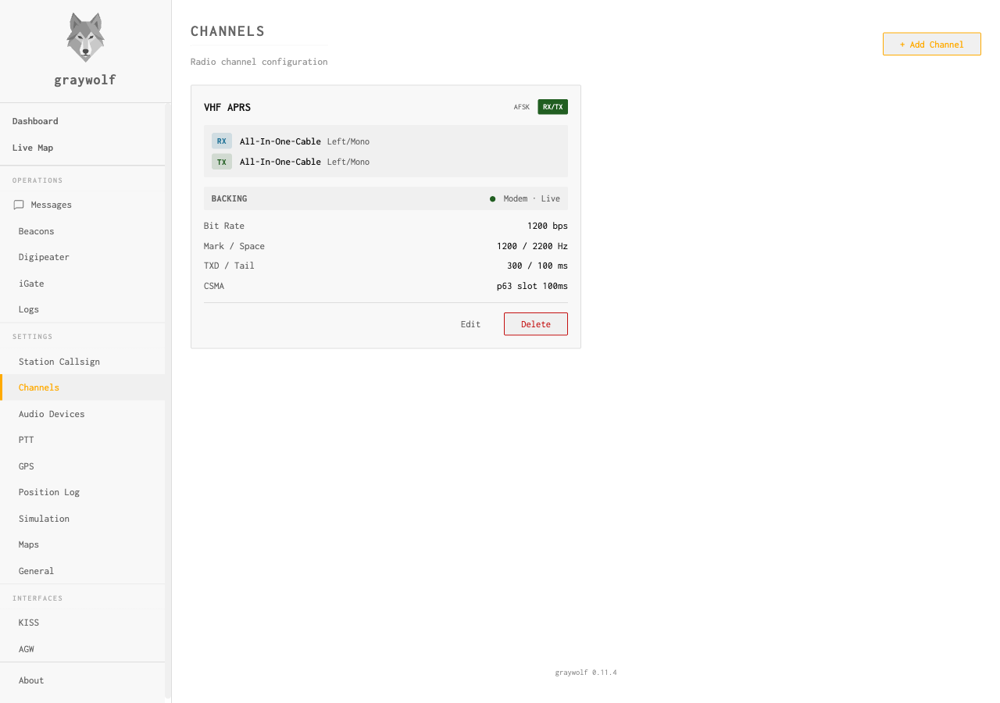
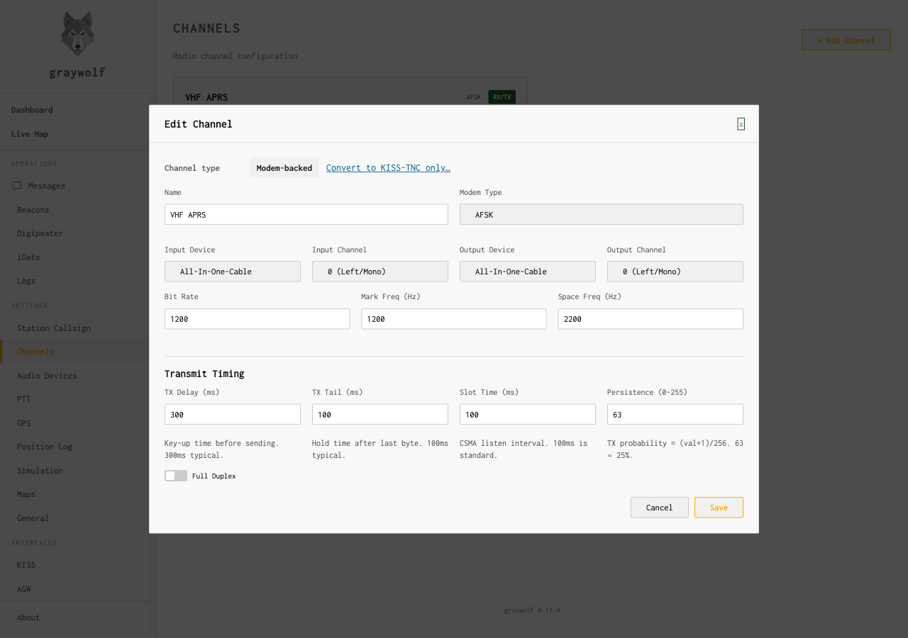

Radio Channels
Configure modem type, frequencies, and demodulator settings
A radio channel is one RF path — typically one radio on one frequency. Graywolf can run several at once on different audio devices, so you can monitor (and transmit on) VHF and UHF in parallel.
Channel Type
When you click + Add Channel, pick the channel type first. The rest of the form changes based on what you choose.
| Modem-backed | The normal case: graywolf does the modulating and demodulating itself against an audio device. Use this for any channel where graywolf talks to the radio directly. |
| KISS-TNC only | No audio device, no software modem. Frames come and go through a KISS interface backed by an external TNC, an attached LoRa modem, or a remote KISS server. See KISS Interfaces and Remote KISS TNC. |
Each channel on the list tells you what’s driving it under BACKING: Modem · Live when graywolf itself is doing the modulation, or TNC / KISS client when frames are coming and going through a KISS interface.
For channels that transmit through the modem, a PTT block also appears on the card showing how graywolf is keying the radio — CM108, GPIO, Serial RTS, Serial DTR, or rigctld — with a short detail such as the GPIO pin number, gpiochip line, or serial device path. Not configured means the channel can transmit electrically but has no PTT method assigned yet on the PTT page; outgoing frames will be dropped until you set one. Receive-only channels and KISS-TNC channels don’t show this block: KISS interfaces handle their own keying, and an RX-only channel never transmits.

Channel Settings
| Field | Default | Description |
|---|---|---|
name |
— | Display name (e.g., “VHF 144.39”) |
input_device_id |
— | Audio input device (required) |
input_channel |
0 |
Audio channel: 0 = left/mono, 1 = right |
output_device_id |
0 |
Audio output device. Pick None (RX only) for a receive-only channel. |
output_channel |
0 |
Output audio channel: 0 = left/mono, 1 = right |
Modem Types
Native transmit and receive support are different. The matrix below describes this source branch; a receiver implementation or a modem-type setting does not imply that a matching transmitter exists.
| Mode | Native RX | Native TX | FX.25 |
|---|---|---|---|
| AFSK 1200, Bell 202 (1200/2200 Hz) | Implemented; operator RF checks passed | Implemented; operator RF/PTT checks passed | TX and automatic RX; 16/32/64 parity |
| AFSK 300, HF tones | Existing implementation | Existing implementation | Not supported; possible future work |
| QPSK 2400 / 8PSK 4800 | Receiver implementation present; not validated by the FX.25 tests | Not implemented | Not supported |
| G3RUH 9600 | Receiver implementation present; not validated by the FX.25 tests | Not implemented | Not supported |
| Plain FSK | Not implemented | Not implemented | Not supported |
AFSK 1200 baud (Bell 202) is the standard APRS modulation used on VHF. This is what you want for 144.39 MHz (North America) or 144.80 MHz (Europe).
| Field | Default | Description |
|---|---|---|
modem_type |
afsk |
AFSK modulation |
bit_rate |
1200 |
Baud rate |
mark_freq |
1200 |
Mark frequency in Hz |
space_freq |
2200 |
Space frequency in Hz |
profile |
A |
Demodulator profile (see below) |
num_slicers |
1 |
Parallel decision thresholds (1, 2, 4, or 8) |
fix_bits |
none |
Bit-flip retry: none, single, or double |
Demodulator Profiles
Graywolf offers two demodulator profiles, matching Dire Wolf’s decoders:
| Profile A default | Dual local-oscillator mixing with root-raised-cosine filtering and AGC. Best general-purpose decoder for most radio setups. |
| Profile B | FM discriminator with phase-rate measurement. Better for receivers with flat audio output (no de-emphasis). |
Multi-Slicer
Increasing num_slicers runs multiple parallel decision
thresholds on the same audio stream. This can recover packets that
a single threshold would miss due to noise or signal variation.
Higher values use more CPU.
A good starting point for a busy channel is
num_slicers: 4. On a Raspberry Pi, keep this at
1 or 2 to stay within CPU budget.
A G3RUH baseband receiver exists for 9600 bit/s, using flat discriminator audio. A native G3RUH transmitter is not implemented, and this option is not exposed in the channel editor. Do not configure it expecting native RF TX or FX.25.
| Receiver backend names | 9600, scramble, baseband |
bit_rate | 9600 |
Receiver code exists for 2400 bit/s QPSK (V.26 A/B) and 4800 bit/s 8PSK. A native PSK transmitter is not implemented. The PSK selector must not be interpreted as TX support. These receivers were not part of the 1200-baud FX.25 interoperability or physical acceptance tests.
modem_type | psk |

Do not use PSK or G3RUH channels for native
transmission: the existing non-FX.25 TX path still builds AFSK audio,
rather than a matching PSK/baseband waveform. The former
gfsk and fsk UI choices are not supported
transmitter implementations. Ordinary 300-baud AFSK code paths exist,
but no HF RF acceptance is claimed by these FX.25 tests.
Native backend selection currently requires an input audio-device binding, even when only transmission is wanted. A literal output-only configuration is not fully wired up. This is separate from carrier sensing: a configured modem does not need to decode a received packet before transmitting.
Forward Error Correction
FX.25 is currently implemented only for native 1200-baud Bell 202 AFSK transmit and receive (1200/2200 Hz tones). It is not supported at 300 baud, 9600 baud, or on PSK/G3RUH modes. 300-baud FX.25 is possible future work. An external KISS TNC controls its own on-air encoding; these settings do not enable FEC in that TNC.
Native FX.25 reception is automatic alongside ordinary AX.25 on 1200-baud AFSK channels with 1200/2200 Hz Bell 202 tones. The FX.25 transmit toggle affects transmission only.
A blue FX.25 badge on a native transmit channel's card identifies its saved FX.25 transmit configuration. It remains visible next to Disabled when that channel is parked. It does not mean a transmission is in progress or that every frame uses FX.25; oversized frames may fall back to AX.25. Inspect the packet log for actual encoding. The header badges wrap when space is limited.
fx25_encode |
Enable standard Reed-Solomon FX.25 on native 1200-baud Bell 202 AFSK transmit |
fx25_mode | auto (recommended), 16, 32, or 64; TX only |
il2p_encode |
Reserved IL2P setting; native live TX/RX is not connected |
FX.25 supports standard tags 1–11 and 16/32/64 parity bytes. TX automatically chooses tags 4, 3, 6, 9, 5, then 1 as the protected frame grows. The maximum AX.25 frame before FCS is 235 bytes; bit stuffing can lower that limit. Frames too large for the selected FX.25 mode use ordinary AX.25, without truncation, and the packet log explicitly identifies AX.25 fallback. This applies to Auto and fixed parity choices. Unsupported rates, tones, KISS-only channels, and simultaneous FX.25/IL2P transmit settings are rejected. In Channels, edit the native channel, select AFSK and 1200 baud, set mark/space to 1200/2200 Hz, then enable FX.25 transmit and save. TX defaults off. Automatic is recommended for everyday use; fixed 16/32/64-parity modes are available for specific use cases or controlled testing. The selector affects TX only; RX recognizes all supported modes. The packet log shows a verified FX.25 badge, tag/parity and repaired-symbol count, including zero for clean codewords. Native TX rows show the actual encoding and selected tag/parity after local encoding and queue acceptance; a channel setting alone is not used to label them. These local TX labels do not prove RF reception. Saving a channel does not transmit a packet.
Automatic uses the pinned Dire Wolf FX25TX 1 size-selection
policy, not a signal-quality measurement. Required bytes include the
complete stuffed frame, FCS and HDLC flags:
| Required protected bytes | Tag | Data capacity | Parity bytes |
|---|---|---|---|
| Up to 32 | 0x04 | 32 | 16 |
| 33–64 | 0x03 | 64 | 16 |
| 65–128 | 0x06 | 128 | 32 |
| 129–191 | 0x09 | 191 | 64 |
| 192–223 | 0x05 | 223 | 32 |
| 224–239 | 0x01 | 239 | 16 |
These are not APRS comment lengths. Fixed parity picks the shortest fitting standard block in that family; it does not switch parity families. If no block fits, transmission falls back to ordinary AX.25. Added tags, parity and padding increase airtime by an amount that depends on the payload and chosen block; there is no universal airtime multiplier.
The channel API exposes fx25_encode and
fx25_mode. Packet API field fx25 describes
verified native RX; tx_encoding describes actual native TX
encoding, including fallback_reason: frame_too_large.
A later API/dashboard refresh may be needed for TX metadata.
See the repository’s docs/fx25.md and
docs/fx25-validation.md for wire provenance, detailed limits
and version-specific acceptance evidence.
TX Timing
Beacon Now queues a request. Carrier sensing, persistence and rate limits can defer dispatch; an accepted request is not proof of physical transmission. Do not repeatedly click merely because PTT has not keyed yet. Native carrier state is reconciled from valid modem status after audio reconfiguration, so an old busy state does not require another received packet to clear. Genuine busy carrier still inhibits half-duplex TX. No forced-transmit timeout is used.
| Field | Default | Description |
|---|---|---|
tx_delay_ms |
300 |
Milliseconds of preamble flags before data |
tx_tail_ms |
100 |
Milliseconds of trailing flags after data |
tx_delay_ms gives the radio time to key up and stabilize
before data is sent. Most radios need 200–500 ms. Too short and
the beginning of your packet will be lost; too long wastes airtime.